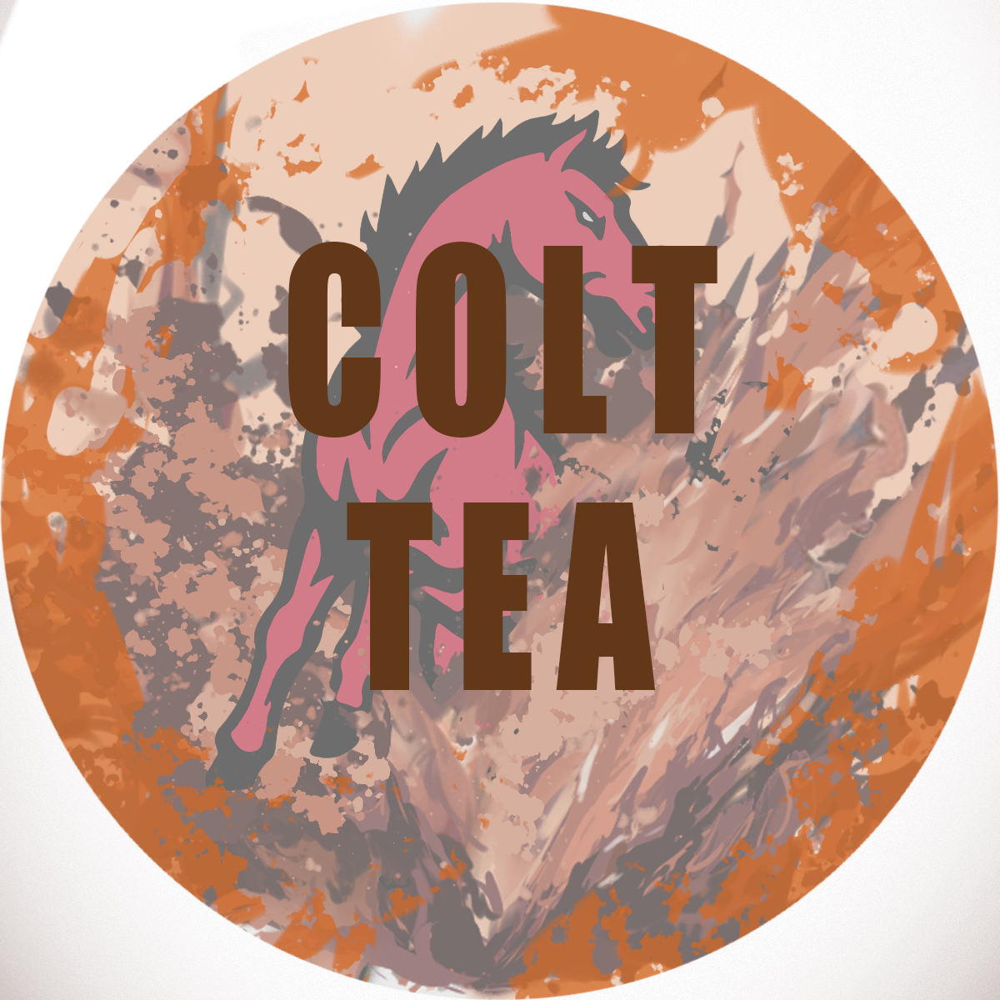
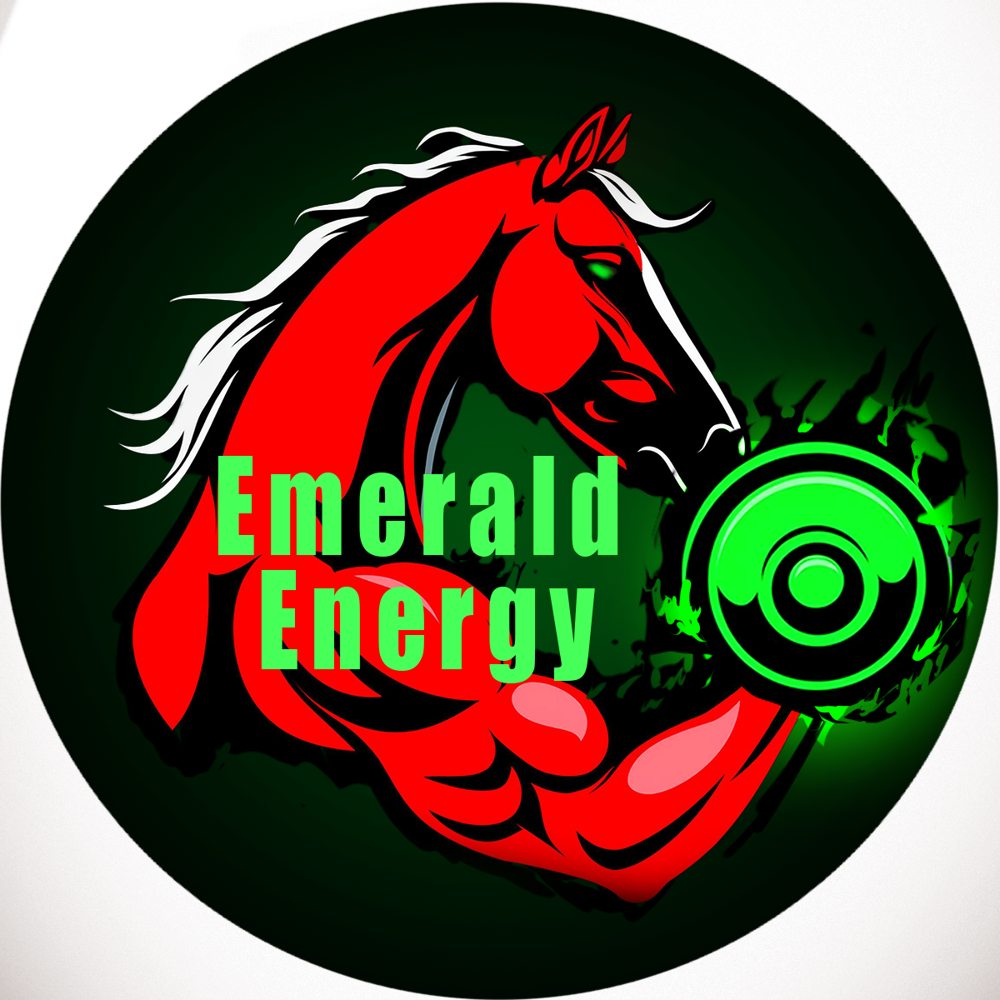
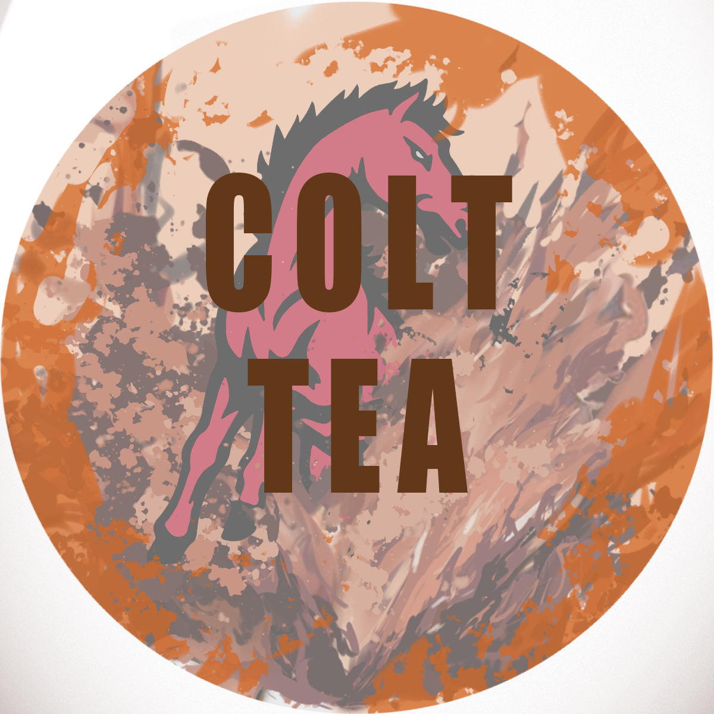
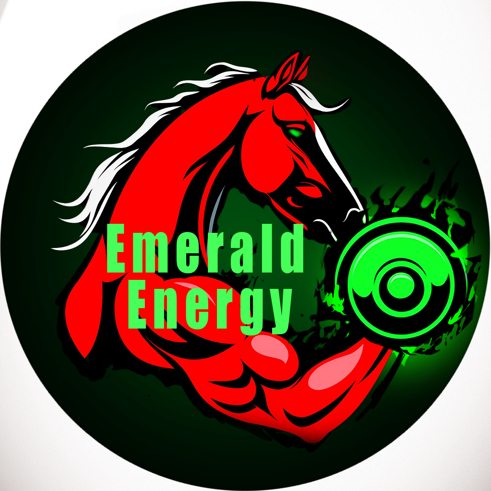

College & Career Center Animated GIF

I created a 500x2000px animated GIF using Blender for the Logan College & Career Center website. The piece uses vibrant colors and multiple visual elements to represent the diversity and richness of career and educational pathways. The smooth transitions in the animation highlight the broad range of possibilities for the future. All images used are either original or properly licensed, with Creative Commons attributions noted in the metadata.
Library Sign

I designed a 36"x24" library sign based on Ms. Chakrabarti's guidelines, emphasizing readability through high-contrast colors and clear sans-serif fonts. A decorative border was added to enhance visual appeal, and book-themed graphics were included to align with the library's purpose. The design effectively balances aesthetic elements with functional requirements.
Colt Brew Logos
 



I developed three 2" round beverage labels (Avery 94501) for school-themed drinks: Colt Brew coffee, Emerald Energy drink, and Colt Tea. Each label incorporates school colors and mascot elements to create distinct brand identities. Colt Brew features classic coffee imagery, Emerald Energy showcases dynamic, futuristic designs, and Colt Tea presents natural, calming visuals. All labels were designed using vector graphics to ensure clarity at various sizes.
TUPE Fair Flyer
I designed a public health flyer for the TUPE Fair to promote tobacco-use prevention education. The flyer features bold visuals and high-contrast elements to ensure clarity and readability from a distance. Statistical information is presented in an accessible manner, and the overall layout balances textual and graphical components to effectively engage the student audience.
Logan Live Opening Music
Using GarageBand, I composed a 7-minute theme for "Logan Live," James Logan High School's news program. The composition combines elements that convey journalistic seriousness with school spirit, incorporating typewriter-like percussion and energetic melodies. Audio levels were meticulously balanced to meet broadcast standards, and multiple versions were produced to suit different segments of the program.
The Courier Flag
I created a 1200x300px web banner for "The James Logan Courier," the school's student newspaper. The design includes the school's address and utilizes a color scheme that aligns with both the school's colors and the existing website. Advanced Photoshop techniques were employed to produce dimensional typography, and all visual elements were either original creations or sourced from properly licensed materials to ensure copyright compliance.
Mr. Foster's Page Logo

I designed a 600x300px logo for "Mr. Foster's Page," focusing on originality to avoid copyright concerns. Utilizing Photoshop, I transformed simple typography into an engaging visual through the application of layer styles and custom shapes. The logo strikes a balance between professionalism and approachability, incorporating subtle school-themed elements while maintaining a clean, modern look suitable for various digital platforms.
Upside-Down Celebrities

Created a surreal photo manipulation exploring facial perception by rotating celebrity images 180 degrees. The project demonstrates advanced Photoshop skills including precise selections, layer masking, and color correction to make inverted faces appear natural. Researched psychological aspects of facial recognition to enhance the unsettling effect. When technical issues arose, adapted by using Pixlr Editor to complete the project, showing problem-solving flexibility.
Student Art Show Flyer
I crafted an 8.5x11" portrait-oriented flyer for the Student Art Show held at the Center for the Performing Arts from May 5th to 9th. Incorporating artistic elements that reflect the creativity of the exhibiting students. Key details, such as the Opening Night reception and exhibit dates, are prominently displayed to inform and attract attendees.